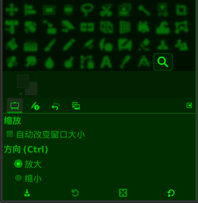

缩放工具(视图)
快捷键：Z

缩放工具 (视图 )及其工具选项
缩放工具(视图)(  )可以调整视图的缩放级别。
)可以调整视图的缩放级别。
此工具仅仅是调整显示的缩放，对图像数据没有做任何处理。
缩放工具的操作方法很简单，选择 缩放工具 后，在图像上点击或点击并拖动一段距离即可。
在菜单 视图→缩放 中有更精确的缩放级别 。
辅助快捷键
按Ctrl键同时旋转鼠标的滚轮，可以更快捷地缩放图像，缩放中心为鼠标所在的位置。
按Ctrl键会切换放大和缩小，即，如果点击鼠标后会放大，那么点击同时按Ctrl键会变成缩小，反之同理。
工具选项
(没找到工具选项？请参考工具箱→矩形选择工具→如何显示工具选项)
自动改变窗口大小：缩放时改变窗口大小。此选项优先级别低于首选项中的设置，请在菜单 编辑→首选项→图像窗口⇒缩放和改变大小行为 中勾选“缩放时调整窗口大小”。
方向：默认点击图像会放大图像，这里可以设置默认行为是放大还是缩小。
工具选项窗口底部有四个按钮，一些常用的参数可以保存起来供以后使用：
保存工具预设：把当前的参数保存起来，以后可以直接调用；可以保存多个；保存时可以命名。
恢复工具预设：调用以前保存的参数。
删除工具预设：删除以前保存的参数。
重置到默认值：把当前参数重置到GIMP默认值。